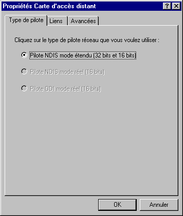
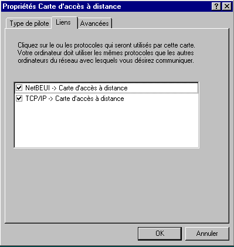
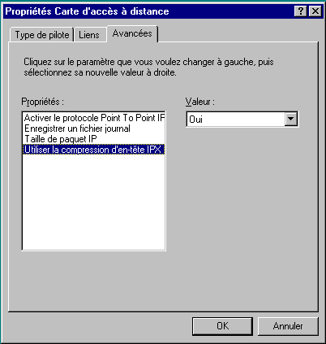
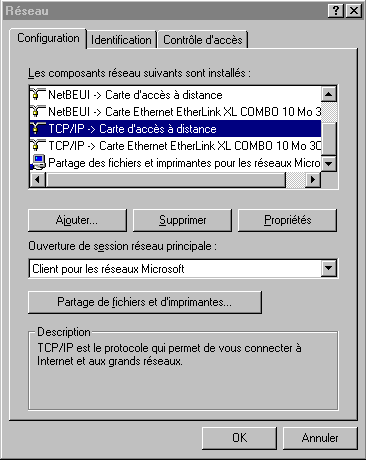
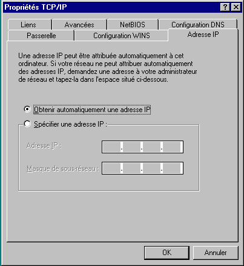
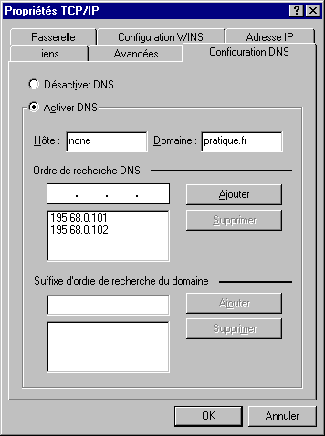
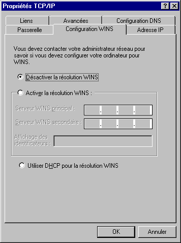
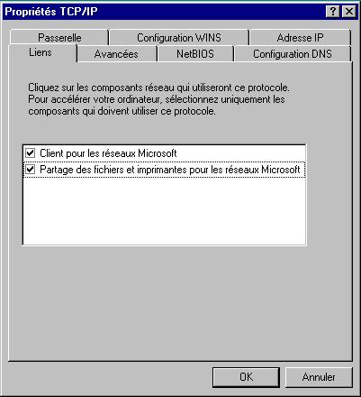

Toujours à partir de la fenêtre "Réseau", sélectionez l'option "Client pour les réseaux Microsoft".
Dans la fenêtre "Réseau" choisissez maintenant l'option "Carte d'accès distant"
Cliquez sur le bouton "propriétés" : une fenêtre avec 3 onglets apparaît.
Cliquez sur l'onglet "type de pilote" et sélectionnez le choix : "Pilote NDIS mode étendu"

Cliquez sur l'onglet "liens" et sélectionnez le choix : "TCP/IP"

Cliquez sur l'onglet "avancé" et sélectionnez les choix suivants :
Activer le protocole Point To Point IF
Oui
Enregistrer un fichier journal
Non
Taille de paquat IP
Automatique
Utiliser la compression d'en-tête IPX
Oui

Cliquez sur le bouton "OK" et restez dans la fenêtre "Réseau".
Dans la fenêtre réseau, choisissez maintenant l'option : TCP/IP.
Cliquez sur le bouton "propriétés" : une fenêtre avec six onglets apparaît.
Sélectionnez l'onglet "Adresse IP" et activez le choix "Obtenir une adresse IP automatiquement".


Sélectionnez l'onglet "Configuration DNS"
ISIMA : cochez "Désactiver DNS"
normal : cochez "Activer DNS" et :
Dans la zone "Hote", indiquez "None"
Dans la zone "Domaine", indiquez "pratique.fr"
Dans la zone "Ordre de recherche DNS" indiquez "195.68.0.101 et Cliquez sur le bouton "Ajouter".
Dans la zone "ordre de recherche DNS" indiquez maintenant : "195.68.0.102 et Cliquez sur le bouton "Ajouter".

Sélectionnez l'onglet "Configuration WINS" et cliquez sur "Désactiver la résolution WINS"

Sélectionnez l'onglet "Passerelle" : rien ne doit être sélectionné ici.
Sélectionnez l'onglet "Liens" et vérifiez que "Client pour les réseaux Microsoft" est coché.

Cliquez sur le bouton "OK".
Cliquez sur le bouton "OK" de la fenêtre "Réseau" pour fermer cette fenêtre.
A ce stade Windows vérifie que tous les éléments nécéssaires à l'installation sont présents sur votre disque dur et dans le cas contraire les y installe depuis le CD-ROM ou depuis les disquettes.
Un message vous informe que votre ordinateur doit être redémarré : acceptez ce choix en cliquant sur "OUI".